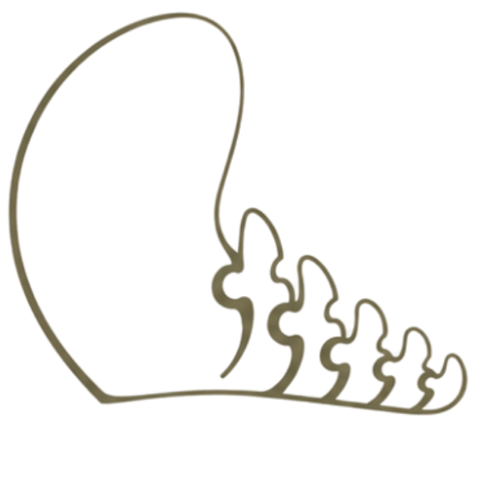
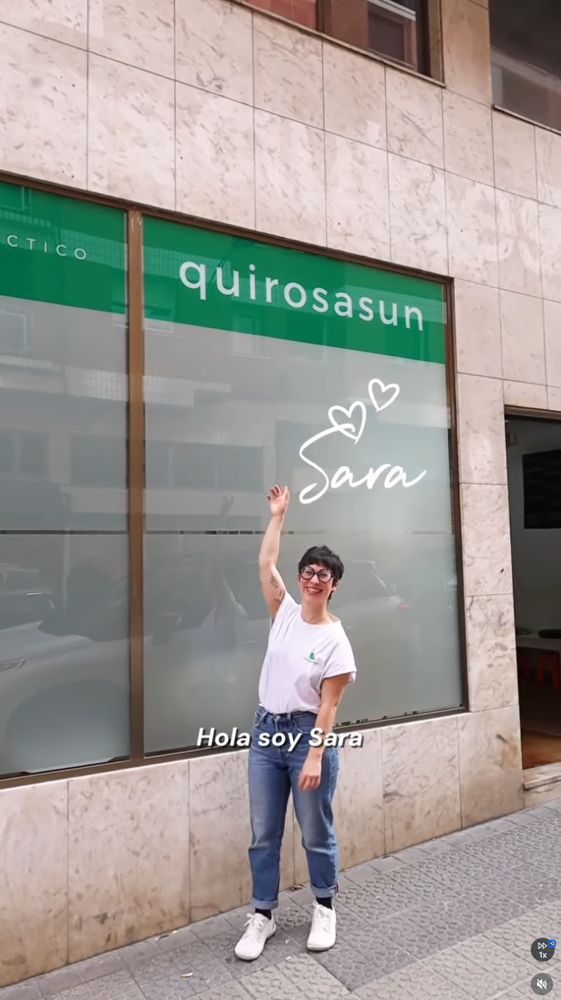
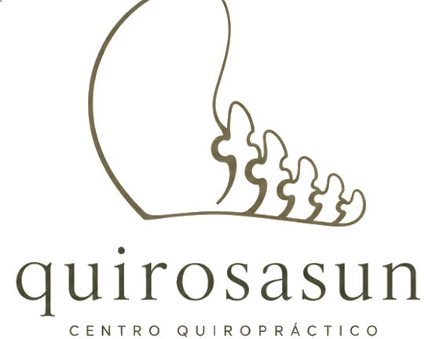
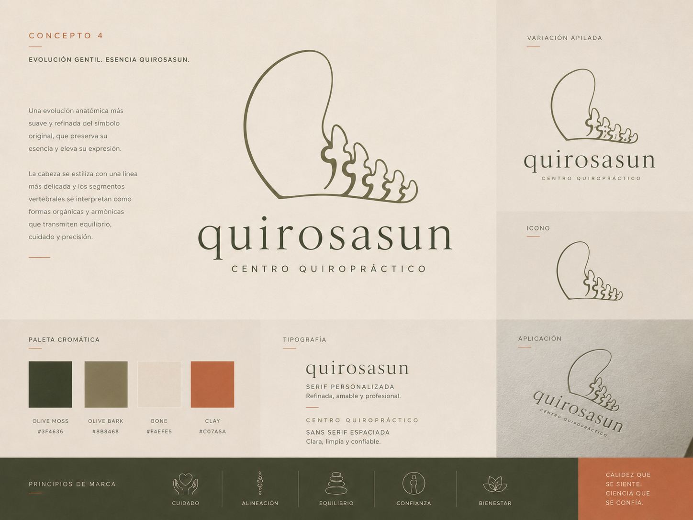
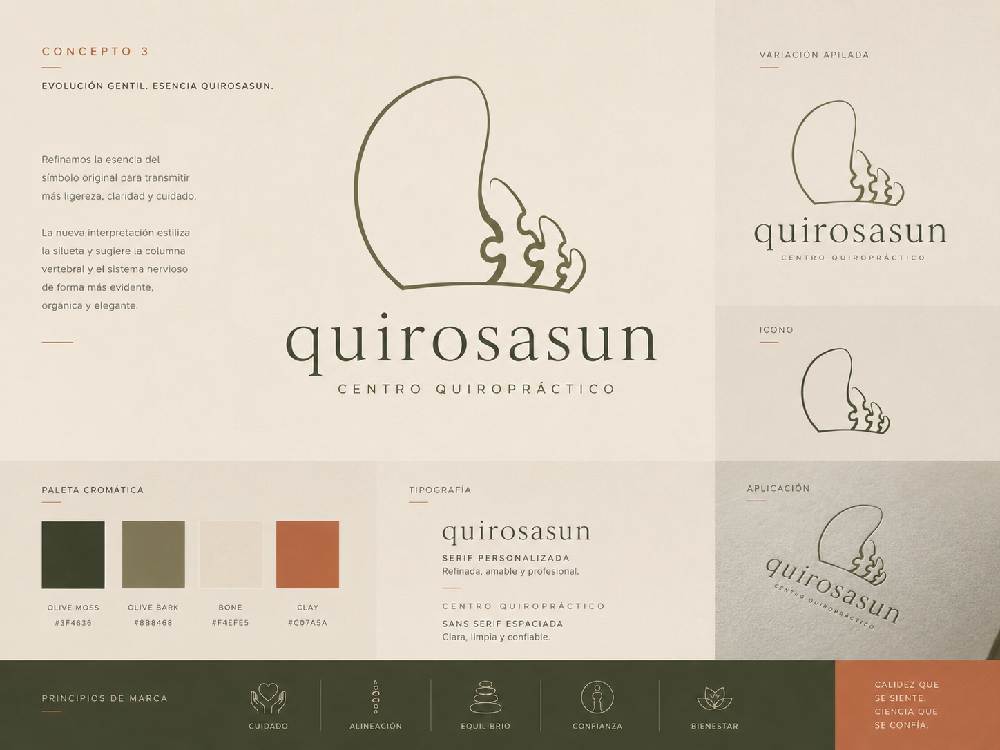
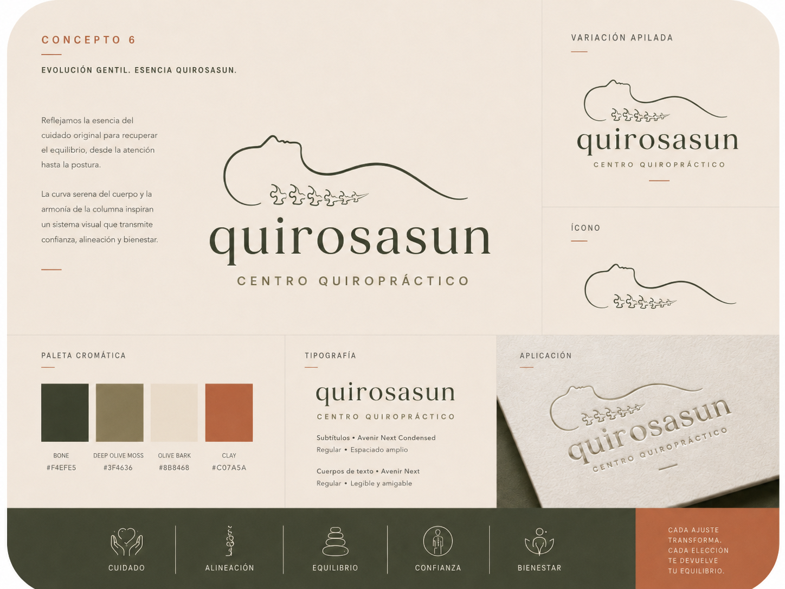
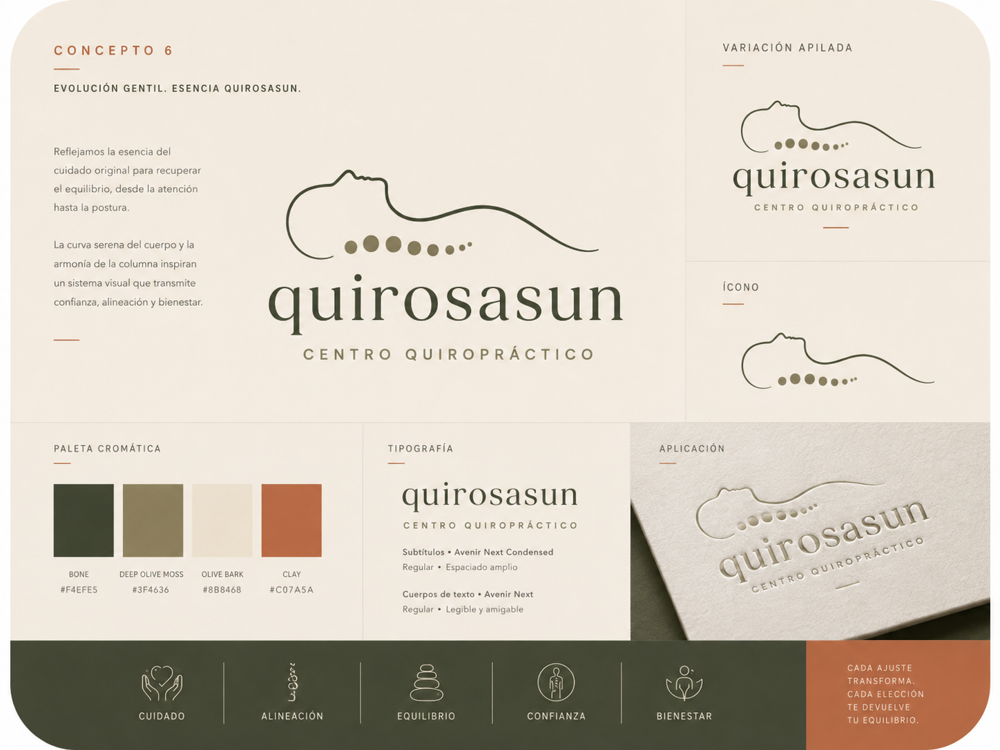
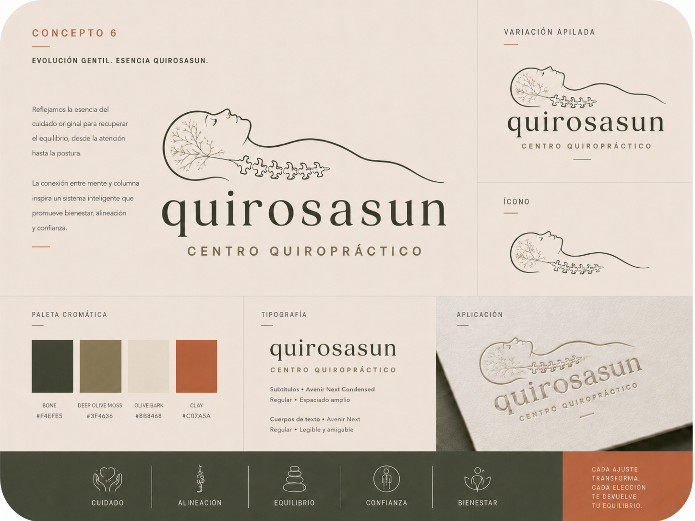
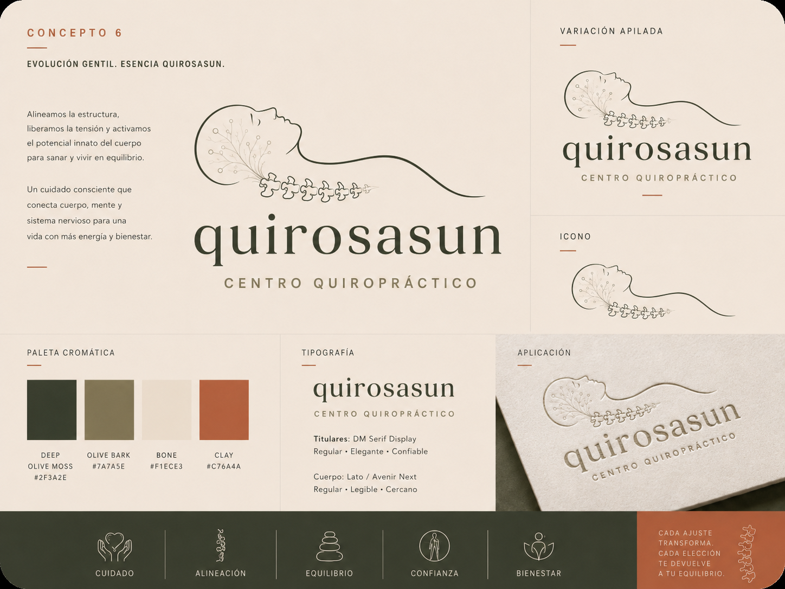

✕

quirosasun Centro QuiroprácticoBrand identity proposal · Bilbao, 2026
You already proved
the hardest part.and you did itALONE.
The numbers speak first. A practice generating 20.000 to 40.000 euros a month - built entirely by you, without an agency, without a visual system, without a marketing budget. Patient by patient. Word by word. That takes a very specific kind of skill, and it deserves to be said clearly before anything else in this presentation: what you've built is genuinely impressive.
What you're looking at here is not a finished proposal. It's an experiment - something built with AI tools to explore what becomes possible when everything you've already created gets the visual language it always deserved. Everything is open for change. The direction, the palette, the concepts - nothing is fixed in stone.
You don't have to do anything with this. But if something resonates, that's exactly where we start.

A successful practice with strong branding doesn't just look better - it's worth more.
Patients are loyal to Sara because of who she is and how she works. That is rare and valuable. It is also the single biggest risk to the long-term value of the practice. Imagine the day she wants to sell, slow down, take six months off, or bring in a second practitioner. Two versions of that day, depending on what was built.
"I am buying Sara's clients, and Sara is leaving."Valued as: equipment + lease.
"I am buying a practice that runs, with or without the founder."Valued as: equipment + lease + brand + goodwill.
The opportunity in this rebrand is not more patients. It is more margin, on the patients you already see and on the new ones the brand will bring in. Strong brands in private healthcare consistently command 15 to 25 percent higher prices than equally qualified, weaker-presented competitors, because the visual and verbal world around the work finally matches the work itself.
Consistent branding compounds into pricing power across every surface the patient touches - the booking email, the waiting room, the printed materials, the follow-up. None of it requires more of Sara's time.
Thirty-one practices. Spain, Europe, and beyond. One honest read.
The most successful chiropractic brands in the world — studied, scored, and compared side by side. This is your research library: see exactly what separates a premium practice from a generic one, understand which visual strategies are working at scale, and know precisely where Quirosasun fits — and where it can lead.
Start with the High reach & brand group — these are the practices that have cracked the code at scale. Click any row to expand the full notes, then open their website and Instagram directly. Study the photography, the typography, the booking flow, the caption style. See what a €120 session looks like versus an €80 one. This is a working research tool, built specifically for Quirosasun.
Your brand as it stands today -
and what it's already capable of.
A section-by-section read of quirosasun.com. What it communicates well, where trust slips away, and where the biggest opportunities are waiting.
01 · Hero

02 + 03 · About Sara & Conditions

04 · Educational content

05 · Testimonials

06 · FAQ

07 · Location & closing

The content is there. The system isn't yet.
3,500 followers, consistent posting, real patient stories, Reels that generate emotional comments from other cities. The raw material is exceptional - what's missing is the visual and strategic layer that would make it unmistakable.
Profile · First impression

Grid · Visual system

Content types · Reels & series

Reels · Thumbnails, copy & comments


Clinical without cold. Warm without spa.
"No pure white. No pure black. No vivid greens. A system that feels alive but never shouts."

Same visual system - colour, spacing, logo. Differences are typography, CTA shape, writing voice. Click any concept to read the full board.
From a subtle evolution of the current logo to completely new concepts with botanical illustration and vertebral elements. Click any to enlarge.






Click any logo to view full size
Every icon is a reason to look after the spine that carries you.
These twenty-four icons translate what chiropractic actually does into language anyone can read at a glance. On a homepage, each icon becomes an entry point — a visitor sees their own problem named and illustrated, and immediately knows they are in the right place. In marketing materials, printed handouts, or social graphics, they work as instant visual shorthand: no explanation needed, just recognition. The goal is to give Sara a ready-made visual vocabulary she can reach for across every surface the brand touches.


The five illustrations below show one possible homepage application: condition-specific entry points, each representing a pain a patient might walk in with. A visitor immediately sees their concern named and illustrated — and knows Sara can help. Clicking a condition reveals more detail about what chiropractic can do for it. This is one direction only. The design, layout, number of conditions, and copy can all be adapted to whatever serves Quirosasun best.

"Stop carrying the weight of it."
Cervical pain rarely starts with a single moment. It builds — from posture, from stress, from a spine quietly compensating. Specific adjustments address the origin, not just the symptom. Most patients feel a real difference within the first session.
↑ Click to close
"Most headaches don't start in your head."
They start in the neck and upper spine — where tension accumulates until it can't be ignored. Chiropractic care targets the structural trigger, reducing both the frequency and the intensity without relying on medication alone.
↑ Click to close
"The back carries everything. Until it doesn't."
When the spine is off, the whole body compensates — muscles overwork, joints wear unevenly, energy drains. Structural care restores the foundation so the rest of you can stop bracing against itself.
↑ Click to close
"Posture is not how you look. It's how you function."
A well-aligned spine changes how you breathe, concentrate, and sleep. The effects compound — one month of care looks very different from a year. It is an investment in how your whole body performs.
↑ Click to close
"Your body is doing something extraordinary."
Chiropractic care during pregnancy eases the physical demands of a changing body — reducing back and pelvic pain, supporting nervous system function, improving sleep, and preparing the spine for birth and recovery.
↑ Click to closeExample only · design, copy and conditions can be changed at any stage
Seven photos of where Quirosasun stands today — and twelve visions of where it could go. Click any concept image on the right to save your impressions.
Today


What it could be — click to annotate


The moment is yours.
Built with artificial intelligence as a creative experiment. No agency. No design budget. Just new tools and a clear vision of what Quirosasun could become.
Care for the line that runs you.